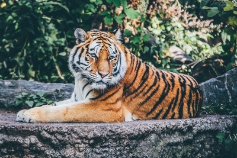
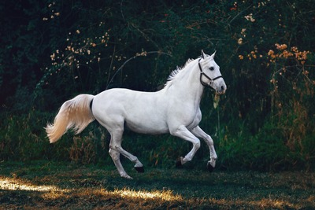

Blog
-
Deer In India| Deer Species In India In the days of national parks, we are always looking for the pristine big cats of India, but we largely ignore deer, the jungle's main animal, which is just as important as the big cats. one of the typical wild animals belongs to the family Cervidae. Deer regurgitate artiodactyls (even toe ungulates) and ruminant ungulates, i.e., after swallowing food, regurgitate semi-solid digested ruminants for maximum nutritional value. Comes in order of animals.
-
About The Indian Elephant Elephants are the largest land mammals on earth, and the African elephant species currently holds that title. But the Indian elephant is not far behind either. They are about 8 feet tall and weigh up to 5.5 tons. A sociable and highly intelligent animal, it is a symbol of beauty in the Indian wildlife landscape and has been declared a Natural Heritage Animal of India. The Indian Elephant has been worshiped in India for centuries as a deity called 'Ganesha'. There is also a general feeling of respect and fear towards this large mammal in India.
-
Wolves of India | Wolves in India Wolves are a very social and enigmatic species. Unfortunately, this elusive predator has been needlessly maligned by mythology. They show love, affection and attachment to each other, making them the most powerful pack hunters.
1) Royal Bengal Tiger
This article will provide a brief introduction of the Royal Bengal Tiger. The Royal Bengal Tiger is a fascinating creature that needs to be studied more. The Indian government has introduced the tiger conservation programme and has forbidden any hunting of tigers in their natural habitats. They are one of the most endangered species on Earth and are slowly dying out due to habitat destruction, human encroachment, poaching, deforestation, and other factors

The Royal Bengal Tiger is the national animal of India. The tiger inhabits the Indian subcontinent, with a range
that extends from the Himalayan forests to southern Bangladesh and eastern Myanmar. In 2008, they were estimated at 1,706 individuals
in India, of which 1,035 live in Uttarakhand and Uttar Pradesh. The remaining live in other parts of Asia.
The Bengal tigers are shifting from an area where tigers are killed because they eat livestock to an area where people have more cattle as a result of poverty alleviation programs (Agarwal et al., 1995). This shift has been accompanied by a higher incidence of tiger kills and retaliatory killings by people when their herds are attacked (Agarwal et al., 1995).
2) Marwari Indian Horse
Marwari is India's most unique and famous horse breed. The breed originated in the Marwar (or Jodhpur) region of Rajasthan and was first bred as a wild cavalry horse in the 12th century and descended from Arabian and native ponies.

Because of her loyalty, Marwari was the first choice for the Indian forces in Jodhpur and Jaipur. These unique horses are also popular
in Indian parades and ceremonies. They are hardy, athletic horses that can withstand hot desert conditions.
For decades, the Indian government banned the export of this particular breed. However, between 2000 and 2006, India lifted the ban and
allowed the export of a small number of horses.
In 2008, India began allowing the 'temporary export' of Marwari horses for up to one year for show in other countries. Marwari horses are characterized by their distinctive ears. The ears are curled and the tips of the ears are touching. Marwari horses have high set necks, strong builds and smarts. On average he is a size 14-16 hand and comes in all colors except piebold and skewbold. Marwari horses have many uses, including polo, dressage, endurance, in-hand, and show jumping.